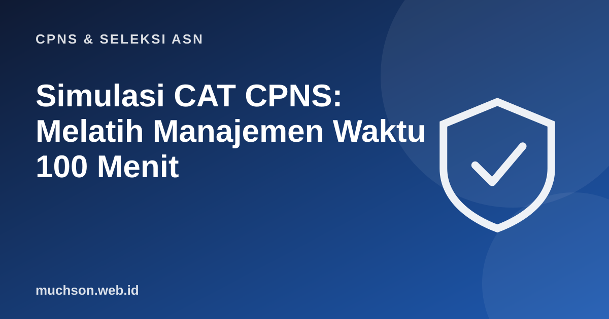

Beranda › Artikel › CPNS & Seleksi ASN
CPNS & Seleksi ASNSimulasi CAT CPNS: Melatih Manajemen Waktu 100 Menit
Banyak peserta paham materi tetapi kehabisan waktu. SKD memberi 100 menit untuk 110 soal, atau sekitar 55 detik per soal. Manajemen waktu bisa dilatih, dan simulasi CAT dengan timer, navigasi nomor, dan tanda ragu-ragu adalah tempat latihannya. Berikut strategi dan cara memakainya.

Matematika waktu SKD
SKD berisi 110 soal dalam 100 menit: TWK 30, TIU 35, dan TKP 45 soal (KepmenPANRB 406/2026). Rata-rata hanya sekitar 54 detik per soal, padahal soal TIU numerik biasanya butuh lebih lama daripada TWK yang berbasis ingatan.
Deskripsi teks diagram
- TWK: 30 soal: 20 menit
- TIU: 35 soal: 42 menit
- TKP: 45 soal: 33 menit
- Sisa untuk tinjauan: 5 menit
Fitur simulasi CAT yang membantu berlatih
| Fitur | Cara kerja | Kegunaan latihan |
|---|---|---|
| Navigasi nomor soal | Daftar nomor dengan status dijawab, ragu-ragu, atau kosong | Berpindah ke soal lain dan kembali |
| Tanda ragu-ragu | Tandai soal yang belum yakin | Melewati soal sulit lalu meninjaunya |
| Timer berjalan dari jam mulai | Waktu tetap berjalan walau tab ditutup; jawaban tersimpan otomatis di browser | Latihan disiplin waktu seperti ujian sungguhan |
| Konfirmasi Selesai | Menampilkan jumlah soal yang belum dijawab sebelum mengakhiri | Mencegah mengakhiri terlalu cepat |
| Penilaian server | Jawaban dinilai di server setelah Selesai, lalu menampilkan rapor | Skor tidak bisa diubah dari browser |
Simulasi ini bukan pengganti CAT resmi. BKN pernah menyebut cat.bkn.go.id sebagai satu-satunya platform simulasi dari BKN dan gratis (pernyataan 2019 lewat Setkab). Gunakan juga simulasi resmi untuk mengenal antarmuka asli.
Strategi waktu yang bisa dilatih
- Putuskan dalam 10 detik. Jika belum terlihat arah jawabannya, tandai ragu-ragu dan lanjut.
- Kerjakan subtes yang paling cepat lebih dulu. Banyak peserta memulai TWK atau TKP untuk mengumpulkan poin cepat. Urutan bebas menurut kenyamanan Anda.
- Sisakan 5 sampai 10 menit untuk meninjau soal bertanda ragu-ragu.
- Jangan membiarkan soal kosong. Soal salah dan kosong sama-sama bernilai 0 pada TWK dan TIU, dan TKP tidak menjawab bernilai 0.
- Latih dengan timer yang nyata. Mengerjakan tanpa batas waktu tidak melatih keterampilan yang diuji.
Deskripsi teks diagram
- Menit 0 sampai 35: Subtes termudah. Kumpulkan poin dengan cepat
- Menit 35 sampai 75: Subtes sedang. Tandai ragu-ragu bila perlu
- Menit 75 sampai 95: Subtes tersulit. Kerjakan yang sudah terlihat caranya
- Menit 95 sampai 100: Tinjau. Periksa soal bertanda ragu-ragu dan yang kosong
Latih ritme Anda dengan tryout SKD gratis di LolosSeleksi: 110 soal, 100 menit, navigasi nomor, dan tanda ragu-ragu.
Tanya jawab
Berapa lama SKD CPNS?
Apakah waktu tetap berjalan bila tab ditutup di simulasi ini?
Bolehkah soal dikosongkan?
Urutan subtes apa yang terbaik?
Apakah simulasi ini sama dengan CAT BKN?
Referensi
- Keputusan Menteri PANRB Nomor 406 Tahun 2026 tentang Nilai Ambang Batas SKD Sekolah Kedinasan (JDIH KemenPANRB, 27 Juli 2026) (membuka tab baru)
- Halaman tryout CAT LolosSeleksi (membuka tab baru)
- Setkab, 16 Oktober 2019: BKN mengingatkan modus penipuan jelang penerimaan CPNS (membuka tab baru)
- Dunlosky dkk. (2013), Improving Students' Learning With Effective Learning Techniques, Psychological Science in the Public Interest 14(1) (membuka tab baru)